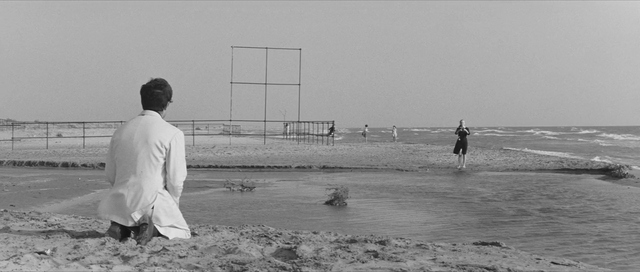
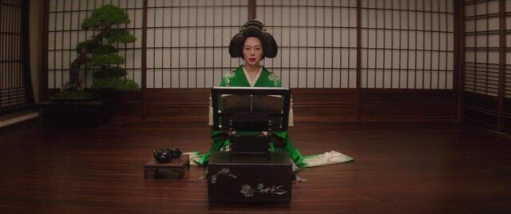
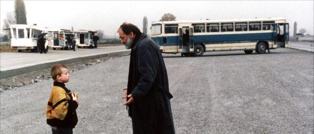

favorite films list
Watched in 2023

- La Dolce Vita (Federico Fellini) - 1960
- Decision to leave (Park Chan-wook) - 2022
- Tár (Todd Field) - 2022
- Anatomy of a fall (Justine Triet) - 2023
- Playtime (Jacques Tati) - 1967
Watched in 2022

- The handmaiden (Park Chan-wook) - 2016
- Paris, Texas (Wim Wenders) - 1984
- The Lobster (Yorgos Lanthimos) - 2015
- Dune (Denis Villeneuve) - 2021
- Im Westen nichts Neues (Edward Berger) - 2022
Watched in 2021
- Amadeus (Milos Forman) - 1984
- Portrait of a lady on fire (Céline Sciamma) - 2019
- A hidden life (Terrence Malick)- 2019
- The hunt (Thomas Vinterberg) - 2012
- Juno (Jason Reitman) - 2007
Watched in 2020

- Eternity and a day (Theodoros Aggelopoulos) -
1998
- Bicycle thief (Vittorio De Sica) - 1948
- Persona (Ingmar Bergman) - 1966
- Rear window (Alfred Hitchcock) - 1954
- Mulholland drive (David Lynch) - 2001
- Carol (Todd Haynes) - 2015
Watched in 2019
- Parasite (Bong Joon Ho) - 2019
- The Favourite (Yorgos Lanthimos) - 2018
- Blade runner 2049 (Denis Villeneuve) - 2017
- Green Book (Peter Farrelly) - 2019
- The Two Popes (Fernando Meirelles)- 2019